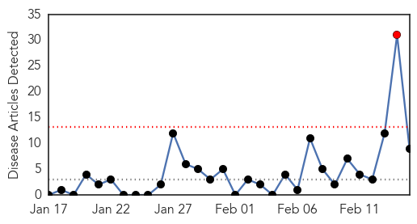
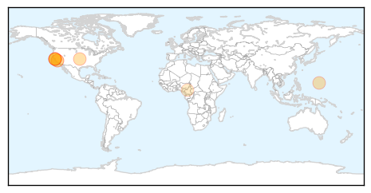
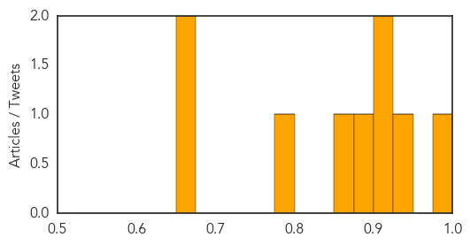

Hepatitis
30-Day Web Trend
0 alerts, 0 warnings
30-Day Twitter Trend
0 alerts, 0 warnings

Article Locations

Article Confidences

Top Articles:
-
No articles found for Feb 15, 2014
Top Tweets:
-
No tweets found for Feb 15, 2014
Measles
30-Day Web Trend
1 alerts, 0 warnings

30-Day Twitter Trend
0 alerts, 0 warnings

Article Locations
Article Confidences
Top Articles:
- 0.987
- BART riders get measles scare from UC Berkeley student
- 0.941
- BART rider with measles potentially exposed thousands, officials warn
- 0.913
- Health Officials Warn San Francisco BART-Riders Of Measles Exposure
- 0.907
- San Francisco Commuters Warned of Measles on BART
- 0.878
- Measles alert issued for California train riders
- 0.863
- UC Berkeley Student Blamed For Spreading Measles to Thousands
- 0.778
- Health officials: Student infected with measles may have spread illness on BART, UC Berkeley campus
- 0.660
- UNICEF deplores cruelty against children in CAR conflict
- 0.657
- Berkeley student who used BART may have exposed many to measles
Top Tweets:
-
No tweets found for Feb 15, 2014